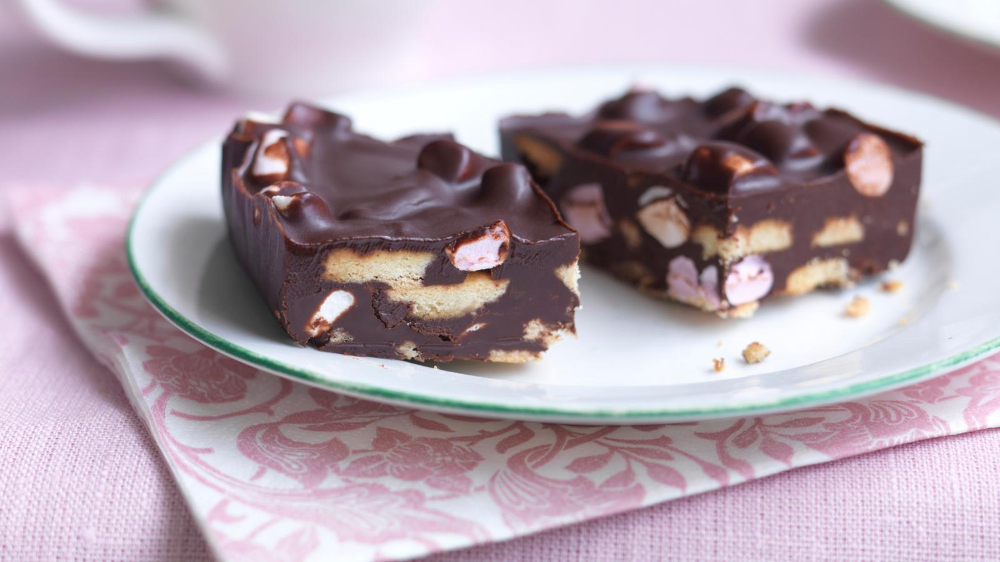

Rocky Road

Description
This easy rocky road will never be out of place at a birthday party or school bake sale.
Ingredients
- 125g/4½oz soft unsalted butter
- 300g/10½oz best-quality dark chocolate, broken into pieces
- 3 tbsp golden syrup
- 200g/7¼oz rich tea biscuits
- 100g/3½oz mini marshmallows
- 2 tsp icing sugar, to dust
Steps
- Heat the butter, chocolate and golden syrup in a heavy-based saucepan over a gentle heat. Remove from the heat,
scoop out about 125ml/4½fl oz of the melted mixture and set aside in a bowl.
- Place the biscuits into a plastic freezer bag and crush them with a rolling pin until some have turned to crumbs
but there are still pieces of biscuit remaining.
- Fold the biscuit pieces and crumbs into the melted chocolate mixture in the saucepan, then add the marshmallows.
- Tip the mixture into a 24cm/9in square baking tin and smooth the top with a wet spatula.
- Pour over the reserved 125ml/4½fl oz of the melted chocolate mixture and smooth the top with a wet spatula.
- Refrigerate for about two hours or overnight.
- To serve, cut into 24 fingers and dust with icing sugar.
Home